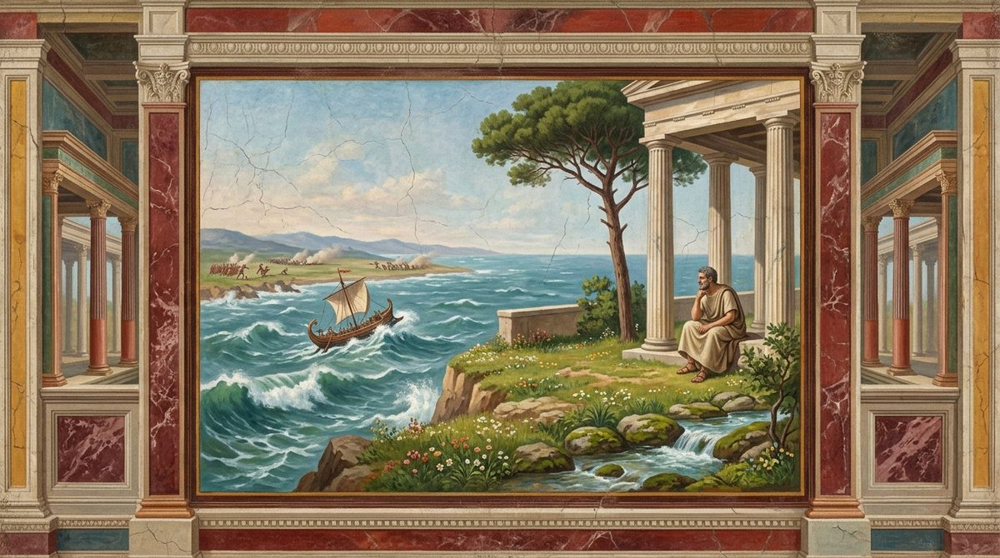
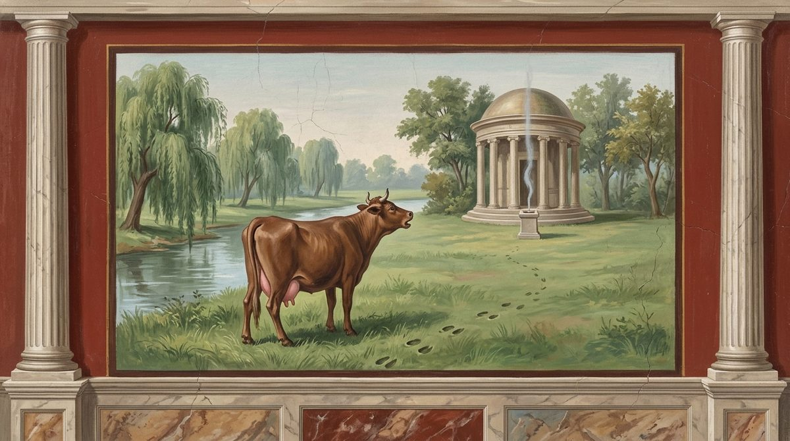

De Rerum Natura · on the nature of things
The serene heights of philosophy; the motions of the first-beginnings in the void, their speed, their fall, and the swerve; the variety and finite range of their shapes; everything is made of mingled seed, and the Great Mother's procession is explained away; the first-beginnings have no color, no other quality and no sense; there are other worlds than ours; and this world, like everything made, grows, decays and will die.
The text followed is the printed Perseus text, as in Book 1. It prints 6 before 5, and 680 after 659, and the translation keeps the printed order and numbers in both places. Four gaps are marked and left unfilled: after 164, after 465, after 528 and after 903. Line 636 is a copyist's garbling of 635 and 637 that editors delete; it is printed, and the translation renders it as it stands. Lines 43, 105-106, 533, 719 and 911 are uncertain in text or sense, and the English gives the printed text its most natural reading, with a note at each. At 289 ("the thing itself") and 1169 ("the drift of time") the translation keeps the printed word where many editors emend. It leaves the printed word twice: at 829 it reads ostrum, "purple cloth", for the meaningless austrum, and at 1061 coaluerunt, "grew together", for coluerunt, "tilled", with most editors; the notes say so.
Three names for the ultimate bodies appear in this book, and the English keeps them apart as Lucretius does: primordia is "first-beginnings", principia "beginnings", and exordia, which first appears at 333, "origins". Concilium and conciliatus, the combination that makes a thing, are "union"; mobilitas, the book's first subject, is "mobility", never "speed", because Lucretius means a power of moving and not a rate. Declinare and clinamen are both "swerve". Simulacra are "images" wherever the word occurs, including the everyday senses it has here (statues at 24, mock battles at 41 and 324, a picture at 112), so that the technical use in Book 4 is seen to grow out of the ordinary one. Animi iniectus at 740 and animi iactus at 1047, the mind's reaching out to what the senses cannot touch, are "casting" and "cast" of the mind. Religiones in the plural (44) stays "religions", the plain word strained as the Latin strains it.
The book's refrains are listed in the register. The children in the dark (55-58) and the three lines that follow them (59-61, from 1.146-148) open the argument here and open Books 3 and 6; 646-651 repeat 1.44-49; 753-754 and 756 repeat 1.670-671 and 1.673; 336-337 return at 723-724 and 694; 478-479 at 522-523; the list of 726-727 at 1020-1021. Where the Latin repeats, the English repeats its own earlier line word for word, and the lines first fixed here are taken over verbatim where Books 3, 5 and 6 borrow them (3.87-90, 5.196-197, 5.431, 5.441, 6.35-38).
The book begins with the most famous of the poem's openings, the watcher on the shore, and sets out the few things nature needs (1-61). Then come the motions of the first-beginnings: that they never rest (62-141), their speed (142-166), the aside against a world made for man (167-183), the proof that nothing rises by its own force (184-215), and the swerve (216-293), which Lucretius makes the ground of the will. The sum of things is unchanging and seems at rest (294-332). The shapes of the first-beginnings are many and account for what pleases and hurts the senses (333-477), finite in range (478-521), and infinite in number within each shape (522-580). Everything is made of mingled seed (581-729), and in this stretch comes the long description of the Great Mother's procession, set out with care and then dismissed in two lines. The first-beginnings have no color (730-841), no other quality (842-864) and no sense (865-1022). The book ends by widening the view: other worlds beyond this one (1023-1104), and the growth, old age and coming death of this one (1105-1174), with the old farmer who blames the times and does not see that everything is wearing out together.
In the right margin: what Machiavelli wrote beside these lines in his own copy, Vatican MS Ross. 884, each linked to its folio. About the margin.

1Sweet it is1, when on the great sea the winds are churning the waters,σαρκὸς εὐσταθὲς κατάστημα, id est carnis [stabilis] constitutio'The well-settled condition of the flesh': Epicurus's definition of pleasure (Plutarch, Non posse 1089d), placed as a heading to Book 2's proem on pleasure. The Latin gloss reads 'carnis ... constitutio'; the middle word is unclear.fol. 20v
to watch from land the great toil of another;
not because anyone's distress is a delightful pleasure,
but because it is sweet to see what evils you yourself are free of.
Sweet, too, to look upon the great contests of war2
5drawn up across the plains, with no share of your own in the danger;
but nothing is sweeter than to hold the well-fortified
serene precincts, set on high by the teaching of the wise,
from where you can look down on others and see them everywhere
10wandering and, straying here and there, seeking the road of life,?Marginal word at 2.10; reading uncertain (vestigia? a variant?).fol. 20v
contending in talent, competing in nobility of birth,
striving night and day with surpassing labor
to rise to the height of wealth and gain the mastery of things.
O miserable minds of men, O blind hearts!
15In what darkness of life and in how great dangers
this span of life, whatever it is, is passed! Do you not see
that nature barks3 for nothing else for herself than this, that
pain be parted from the body and be absent, and the mind enjoy
a pleasant feeling, set apart from care and fear?
20Therefore we see that for the body's nature few things
are needed at all: such things as take away pain,
and such that they can also spread out many delights for us,
more welcome now and then; nor does nature herself feel the want,
if there are no golden images of youths4 about the halls
25holding fire-bearing lamps in their right hands
so that light may be supplied for feasts by night,
nor the house gleam with silver and shine with gold,
nor lyres echo through paneled and gilded rafters5,
when still, lying together on the soft grass
30beside a stream of water under the boughs of a tall tree,
with no great wealth they tend their bodies pleasantly,
above all when the weather smiles and the seasons
of the year sprinkle the greening grass with flowers.
Nor do hot fevers leave the body any faster
35if you are tossed on woven pictures and blushing purple
than if you must lie beneath a common man's coverlet.
Therefore, since in our body treasures are of no profit,
nor nobility, nor the glory of a kingdom,
for the rest, we must think they do the mind no good either;
40unless perhaps, when you see your legions across the Campus6
seething as they stir up the images of war,
made firm with great reserves and a force of wealth,
your ships fitted out with arms, all alike full of spirit,
then, before these things, the religions7 in their terror
45flee panic-stricken from your mind, and the fears of death
then leave your heart empty and loosed from care.
But if we see that these things are laughable and a mockery,
and in truth the fears of men and the cares that dog them
fear neither the clash of arms nor savage weapons,
50and boldly move among kings and the masters of things,
and do not stand in awe of the glitter that comes from gold
nor the bright splendor of a purple robe,
why do you doubt that this power belongs wholly to reasoning,
especially when all life labors in darkness?
55For just as children tremble and fear everything8
in blind darkness, so we in the light are afraid
at times of things that are no more to be feared than
what children in the dark shudder at and imagine will come.
This terror of the mind, then, and this darkness
60must be scattered not by the sun's rays or the bright shafts of day
but by the face and reasoning of nature.
Come now, by what motion the generative bodies of matter
beget the various things and dissolve them once begotten,
and by what force they are compelled to do it, and what
65mobility9 is given them for travelling through the great void,
I shall explain; you, remember to give yourself to my words.
For certainly matter does not cling together, packed close
in a mass, since we see each thing diminish,
and we perceive all things flowing away, as it were, over long age,
70and age withdrawing them from our eyes,
while yet the sum is seen to remain unimpaired,
because the bodies that depart from each thing
diminish what they leave, and on what they come to bestow increase.
They force the one to grow old and the other in turn to flower,
75and do not linger there. So the sum of things is ever
renewed, and mortals live by exchange among themselves.
Some races increase, others are diminished,
and in a brief space the generations of living things are changed
and like runners pass on the torch of life10.
80If you think the first-beginnings of things can stand still
and by standing still beget new motions of things,
you wander far astray from true reasoning.☞fol. 22r
For since they wander through the void, all the first-beginnings
of things must be carried either by their own weight
85or perhaps by the blow of another. For when, swift, they have often
met and clashed, it comes about that suddenly they spring
apart in different ways; and no wonder, since they are very hard,
solid in their weight, and nothing blocks them from behind.
And so that you may see more clearly that all the bodies
90of matter are tossed about, remember that the whole
has no bottom in the sum, and the first bodies have no place
to come to rest, since space is without end or limit,
and spreads immeasurable in all directions everywhere
as I have shown in many words and proved by sure reasoning.11
95And since this is settled, surely no rest
is given to the first bodies through the deep void,
but rather, driven by unceasing and varied motion,
some, when they have collided, leap back over great intervals,
and some are harried by the blow within short spaces.
100And all those that, in a denser union12,
brought together, rebound across small intervals,
entangled by their own interlocking shapes,
these form the strong roots of rock and the savage bodies
of iron, and the other things of this kind.
105Those few others that wander on through the great void13
leap far apart and run far back again
across great intervals; these furnish us the thin air
and the shining light of the sun.
And many besides wander through the great void
110which have been thrown out of the unions of things and nowhere
have been able, even when let in, to join their motions together.
Of this thing, as I tell, an image and picturesimulachrum principiorumAn image of the first-beginnings (the motes in the sunbeam).fol. 22v
is always turning before our eyes and pressing on us.
For look closely, whenever the sun's light is poured
115by rays let in through the darkened places of houses:
you will see many minute bodies14 in many ways, through the void,
mingling in the very light of the rays,
and as though in everlasting conflict waging wars and battles,
fighting troop by troop, and giving no pause,
120driven on by frequent unions and partings;
so that from this you may guess what it is for the first-beginnings
of things to be tossed forever in the great void.
So far as it goes, a small thing can give
a pattern of great things and the tracks of knowledge.
125For this reason, too, it is more fitting that you attend to these
bodies that are seen to be in turmoil in the sun's rays,
because such turmoils signify that there are motions
of matter, too, hidden and blind, beneath them.
For you will see many there, struck by blind blows,
130change their course and, driven back, return,
now this way, now that, in all directions everywhere.
This wandering, you may be sure, all comes from the beginnings15.
For first the first-beginnings of things move of themselves;
then those bodies that are formed of a small union
135and are, as it were, nearest to the strength of the beginnings
are set going, struck by their blind blows,
and they in turn assail bodies a little larger.
So motion rises from the beginnings and comes out
little by little to our senses, so that those too
140are moved which we can make out in the light of the sun,
though by what blows they do it does not plainly appear.
Now what mobility has been given to the bodiesde celeritate motusOn the speed of motion.fol. 23r
of matter, Memmius, you may learn from this in a few words.
First, when dawn sprinkles the lands with new light,?fol. 23r
145and the many-colored birds, flitting through the pathless woods,
fill the places through the soft air with liquid voices,
how suddenly the sun, once risen, is used at such a time
to clothe all things, flooding them with his light,
we see to be ready to hand and plain for all.
150But that heat which the sun sends out, and its calm light,
does not travel through empty void16; and so it is forced
to go more slowly, as it beats its way, as it were, through waves of air;
nor do the little bodies of heat travel one by one,
but tangled with one another and massed together;
155and so at once they are dragged back by one another and hindered
from outside, so that they are forced to go more slowly.
But the first-beginnings that are of solid singleness,
when they travel through empty void and nothing delays them
from outside, and they themselves, one whole from their own parts,
160are borne, straining, toward the one place they began to move to,
must surely surpass in mobility
and be carried far more swiftly than the light of the sun,
and run through many times the extent of space in the same
time in which the sun's flashes spread through heaven.
* * *17nil fieri consilioNothing happens by deliberation. The line is the one our Latin prints as 2.164a.fol. 23v
165nor to follow out each single first-beginning,
to see by what principle each thing comes about.
But some, against this18, ignorant of matter,
hold that nature cannot, without the power of the gods,
so closely fitted, in such measure, to human needs,
170change the seasons of the years and create the crops
and all the other things that mortals are urged to approach,
and to which divine pleasure herself, the guide of life, leads them,
coaxing them through the works of Venus to propagate their generations,
so that the human race should not perish. When they imagine
175the gods have ordered all things for men's sake, in every way
they seem to have slipped greatly from true reasoning.
For even if I did not know what the first-beginnings of things are,
this, still, from the very order of heaven I would dare
to affirm, and to show from many other things,
180that by no means for us, by divine power, was created
the nature of the world: so great the flaws it stands endowed with.
These things, Memmius, I will make plain to you later;
now I will set out what remains concerning motions.
Now is the place, I think, in these matters to prove this toonil sursum ferri propria naturaNothing is carried upward by its own nature.fol. 24r
185to you: that no bodily thing can by its own force
be carried upward and travel upward.
Do not let the bodies of flames deceive you in this;
for they are born upward and take on their increase,
and upward the shining crops and the trees grow,
190though all weights, as far as in them lies, are carried downward.
Nor, when fires leap up to the roofs of houses
and with swift flame lick the rafters and beams,
must we think they do this of themselves, with no force thrust beneath.
Just so the blood let out from our body
195spurts leaping on high and scatters gore.
Do you not see, too, with what force the water's moisture
spits out rafters and beams? For the more we have pushed them deep,
straight down, and many with great force have pressed them, straining,
the more eagerly it thrusts them back up and sends them out,
200so that they rise and leap out by more than half their length.
And yet we do not doubt, I think, that these, as far as in them lies,
are all carried downward through the empty void.
So in the same way flames too must be able, through the breezes
of air, squeezed out, to climb upward, although
205their weights, as far as in them lies, fight to draw them down.
And the night torches of heaven19, flying aloft,
do you not see them draw long trails of flame
toward whatever quarter nature has given them passage?
Do you not see stars and constellations falling to the earth?
210The sun also from the summit of heaven scatters its heat
to every side and sows the fields with light;
to the earth, therefore, the sun's heat also tends.
And you see thunderbolts fly slantwise through the rains;
now from here, now from there, fires broken from the clouds
215rush together; the flaming force falls everywhere upon the earth.
This too, in these matters, we long for you to know:
that when bodies are carried straight down through the voidquom declinent principiaWhen the first-beginnings swerve.fol. 24v
by their own weights, at quite uncertain times
and uncertain places they push off a little from their course,
220just so much that you could call it a change of motion.
For if they were not used to swerve20, all things would fall
downward like drops of rain through the deep void,
and no collision would arise, no blow be created
for the beginnings; so nature would never have created anything.
225But if perhaps someone believes that heavier bodies,
because they are carried more swiftly straight through the void,
can fall from above upon the lighter, and so beget
blows that could give rise to generative motions,
he strays far away, off the road, from true reasoning.
230For whatever falls through water and thin air,
these must quicken their fall in proportion to their weights,
because the body of water and the thin nature
of air cannot delay each thing equally,
but give way more quickly, overcome by heavier things;
235but the empty void, by contrast, cannot on any side or at any
time, hold up anything at all,
but must go on giving way, as its nature seeks;
therefore all things must, through the calm void,
be carried at equal speed21, though driven by unequal weights.
240Therefore heavier things will never be able to fall
from above upon lighter ones, nor of themselves beget the blows
that vary the motions by which nature carries on things.
Therefore, again and again, bodies must incline
a little; but no more than the least, so that we do not seem to invent
245slanting motions, and the true facts refute it.
For this we see to be ready to hand and plain,
that weights, as far as in them lies, cannot travel slantwise
when they plunge down from above, so far as you can see;
but that nothing at all, from the straight line of its path,
250swerves of itself, who is there that could perceive?
Finally, if every motion is always linked,motum varium esse et ex eo nos liberam habere mentemThat motion is various, and from this we have a free mind.fol. 25r
and the new always arises from the old in a fixed order,
and the first-beginnings do not by swerving make
some beginning of motion to break the covenants of fate22,
255so that cause should not follow cause from infinity,
from where does it arise, free, for living things throughout the earth,
from where, I ask, is this will wrested away from the fates,
by which we go forward wherever pleasure leads each one,
and likewise swerve our motions, at no fixed time
260and at no fixed place, but where the mind itself has carried us?
For beyond doubt in these things each one's own will
gives the beginning, and from it motions flow out through the limbs.
Do you not see too that, when in an instant of time the starting-gates23
are thrown open, the eager strength of the horses still cannot
265burst forth as suddenly as their mind itself longs to?
For all the matter throughout the whole body, its whole
store, must be roused, so that, roused through all the limbs,
it may strain together and follow the mind's desire;
so you may see that the start of motion is created by the heart24,
270and that it goes forth first from the will of the mind,
and is then passed on through the whole body and limbs.
Nor is it the same as when we go forward pushed by a blow,
by another's great strength and great compulsion;
for then all the matter of the whole body,
275it is clear, goes and is swept along against our will,
until the will reins it back throughout the limbs.
Do you see now, then, that although an outside force drives many
and often compels them against their will to go forward
and be swept headlong, still there is in our breast
280something that can fight against it and resist?
At whose command the store of matter too
is forced at times to turn through the limbs and joints,
and, thrown forward, is reined back and settles back again.
Therefore in the seeds too you must admit the same,in seminibus esse pondus plagas et clinamenIn the seeds there are weight, blows, and the swerve.fol. 25v
285that there is besides blows and weights another cause
of motions, from which this power is born in us,
since we see that nothing can come to be from nothing.
For weight prevents all things from coming about by blows,
as by a force from outside; but that the thing itself25 should not
290hold an inward necessity in doing all things,
and be compelled, as if conquered, to bear and suffer,
this is brought about by the tiny swerve26 of the beginnings
at no fixed place and at no fixed time.
Nor was the store of matter ever more tightly packednil esse suo densius aut rarius principioNothing is denser or more scattered than its first-beginning.fol. 26r
295than now, nor again spread apart by greater intervals;
for nothing is added to it, and nothing perishes from it.27
Therefore the motion in which the bodies of the beginnings
are now is the same motion they were in through ages gone by,
and hereafter they will always be carried in like manner,
300and what has been wont to be born will be born under the same
condition, and will be, and grow, and be strong in their strength,
as much as is granted to each by nature's covenants.
Nor can any force change the sum of things;
for there is nothing outside into which any kind of matter
305could flee out of the whole, nor any source from which, into the whole,
a new force could rise and burst in and change the whole
nature of things and turn its motions aside.
In these matters it is no wonder why,
although all the first-beginnings of things are in motion,
310the sum nonetheless seems to stand in utmost rest28,
except where some thing makes motions with its own body.
For the whole nature of the first bodies lies far below
our senses, out of reach; therefore, since you cannot see
the bodies themselves, their motions too must steal away from sight;
315the more so since even things that we can see still often hide
their motions when withdrawn from us by a distance of place.
For often on a hill, cropping the glad pastures,29
the woolly flocks creep on wherever, calling each one,
the grasses invite them, jeweled with fresh dew,
320and the lambs, filled full, play and gently butt their heads;
yet all these, seen from far off, seem to us blurred together,
like a whiteness standing still on a green hill.
Again, when great legions fill the spaces of the plains
with their running, stirring up the images of war,
325when the glitter lifts itself to the sky and all the earth around
shines back with bronze, and beneath, from the force of men,
a sound is roused by their feet, and the mountains, struck
by the shouting, throw back the voices to the stars of the world,
and horsemen wheel around and suddenly cross through
330the middle of the plains, shaking them with their strong charge;
and yet there is some place on the high mountains from which
they seem to stand still, a glitter resting on the plains.
Come now, next learn of what sort the origins30
of all things are, and how far they differ in their forms,
335how varied they are, in shapes of many kinds;
not that few are endowed with a like form,31
but because, as a rule, not all are alike to all.
Nor is it a wonder; for since their store is so great
that there is neither end, as I have taught, nor any sum to it,
340it must surely be that not all are in every wayvariam esse figuram principiorumThat the shape of first-beginnings is various.fol. 26v
alike to all, of the same contour and of similar shape.
Further, the human race, and the mute swimming flocks
of scaly creatures, and the glad herds, and wild beasts,
and the various birds, those that throng the gladdening
345watering-places around the banks and springs and lakes,
and those that flit abroad through the pathless woods:
go on and take any one of these you will, kind by kind;
you will find that they still differ from one another in shape.
Nor in any other way could offspring know its mother,
350nor mother offspring; yet we see that they can,
and that they are known to one another no less than men are.

For often before the fair shrines of the gods a calf
falls slaughtered beside the incense-burning altars32,
breathing out a warm river of blood from its breast;
355but the bereaved mother, wandering through the green glades,
knows the prints pressed into the ground by cloven hooves,
searching every place with her eyes, if she can anywhere
catch sight of her lost young, and, stopping, fills
the leafy grove with her lament, and often goes back
360to the stall, pierced through with longing for her calf;
nor can tender willows, nor grasses quickened with dew,
nor any rivers gliding level with their banks
delight her mind and turn aside the sudden care,
nor can the sight of other calves in the glad pastures
365draw her mind away and lighten it of care;
so much does she seek something her own and known.
Again, the tender kids with trembling voices
know their horned mothers, and the butting lambs
the bleating flocks; so, as nature demands,
370each runs, for the most part, to its own udder of milk.
Finally, take any grain you will: you will still not see
that every grain in its kind is like the others,
without some difference of form running between them.
And by a like principle we see the race of shells
375paint the lap of the earth, where with soft waves
the sea beats the thirsty sand of the curving shore.
Therefore again and again by like reasoning it must be,
since they exist by nature and were not made by the hand
of one, to a fixed form, the first-beginnings of things,
380that some of them fly about with shapes unlike each other.
It is very easy for us, by the mind's reasoning, to explain
why the fire of the thunderbolt flows far more piercing
than ours, which is born from torches of the earth;
for you could say that the heavenly fire of the thunderbolt
385is subtler, consisting of small shapes,
and so passes through openings that this fire of ours,
born from wood and created from the torch, cannot.
Again, light passes through horn, but rain
is thrown back. Why so, unless those bodies of light
390are smaller than the ones that make the kindly liquid of the waters?
And although we see wine in an instant pass
through a strainer, yet on the other hand oil lingers slow,
either because, surely, it is made of larger elements,
or ones more hooked and tangled with one another,
395and so it happens that they cannot be so suddenly drawn apart
from one another that the first-beginnings, each one,
might, one by one, seep through the openings of each thing.
Add to this that the liquids of honey and of milk
are handled in the mouth with a pleasant feeling on the tongue;
400but on the other hand the loathsome nature of wormwood and of wild
centaury33 twists the mouth with its foul taste;
so that you can easily recognize that of smooth and round bodies
are made the things that can touch the senses pleasantly,
but on the other hand whatever seems bitter and harsh,
405these are held bound together by more hooked ones,
and for that reason are used to tear their way into our
senses, and to burst through the body as they enter.
Finally, all things good to the senses and bad to the touch
are at war with one another, made of unlike shape;
410lest you should perhaps think that the harsh shudder
of the screeching saw consists of elements as smooth
as the Muses' melodies34, which musicians, along the strings,
wake with nimble fingers and give form to;
nor should you think that first-beginnings of like form pierce
415into men's nostrils when foul corpses are burning
and when the stage is freshly sprinkled with Cilician saffron35
and the altar nearby breathes out the perfumes of Panchaea;
nor suppose the pleasant colors of things are made of like
seed, the colors that can feast the eyes,
420and those that prick the sight and force it to weep,
or look foul and ugly with their foul appearance.
For every thing whatsoever that caresses the senseshfol. 28r
was not created without some smoothness in its beginnings;
but on the other hand whatever is troublesome and harsh
425is not found without some roughness of matter.semina quae titillant sensumSeeds that tickle the sense.fol. 28r
There are also things that are rightly thought neither to be smooth
nor altogether hooked with bent points,
but rather made with little angles jutting out a little, such as
can tickle the senses rather than hurt them;
430of which kind are wine-lees and the flavors of elecampane36.
Finally, that hot fires and icy frost
are toothed in unlike ways and so prick the senses
of the body, the touch of each gives us proof.
For touch, touch37, by the holy powers of the gods,
435is the sense of the body, whether when a thing from outside
works its way in, or when a thing born in the body hurts it,
or gives delight going out through the generative acts of Venus,
or when, from a collision, they riot within the body itself,
and the seeds, roused, throw the sense into confusion among themselves;
440as if perhaps with your hand you yourself were to strike
any part of your body you please and make the trial.
Therefore the forms of the beginnings must differ far,
since they can give rise to various sensations.
Finally, the things that seem to us hardened and dense,
445these must consist of elements more hooked together
and be held fast, compacted deep, as if by branches.
In this class, first of all, stand rocks of adamant38
in the front line, used to scorning blows,
and strong flints, and the strength of hard iron,
450and bronze that shrieks as it holds out against the bolts.
Those indeed must be made rather of smooth and round bodies,
the things that stand as liquids, with a fluid body.
For a scoop of poppy-seed flows as easily as one of water;
for the little globes do not hold to one another,
455and, once disturbed, it runs as readily down a slope.
Finally, all things that you see in a point of time
scatter, like smoke and mists and flames, it must be that,
if they are not all made of smooth and round bodies,
yet they are not hampered by tangled ones,
460so that they can prick the body and pierce stones
and yet not stick together; so that whatever we see
to be toothed to the senses, you can easily know
is made not of tangled but of sharp elements.
But that you see the same things bitter that are fluid,
465as the sweat of the sea is, ought to be no wonder at all
* * *39
For because it is fluid, it is made of smooth and round bodies,
but mixed in with the smooth are hooked
bodies of pain. Yet these hooked ones need not be held fast:
clearly they are round nonetheless, rough though they are,
470so that they can at once roll forward and hurt the senses.
And that you may believe the more that rough are mixed with smoothmare ex quibus constet principiisOf what first-beginnings the sea consists.fol. 29r
beginnings, from which the body of Neptune40 gets its bitterness,
there is a way of separating them and seeing them apart:
the moisture grows sweet when, through the earth, the same moisture
475is filtered through many times, to flow into a pit and grow mild;
for it leaves behind, above, the first-beginnings of the foul brine,
since, being rough, they can cling the more within the earth.
Since I have taught this, I will go on to join to it a fact41
which, fitted to this, draws its credit: that the first-beginnings of thingsin uno principio non posse esse plures formas, idest infinitasIn one first-beginning there cannot be more shapes, that is, infinitely many.fol. 29r
480vary within a finite range of shapes.
For if it were not so, then again certain seeds
will have to be infinite in the growth of their bodies.
For within the one same smallness of any given
body, for the shapes to vary much from one another
485is not possible. For suppose that of least parts42, three of them,
the first bodies are made, or add a few more to these;
surely, when all those parts of a single body
you have set at top and bottom, and changed the right for the left,
and tried in every way what appearance each order gives
490of form to the whole of that body,
for the rest, if you chance to want to vary the shapes,
other parts will have to be added. From this it will follow
that, on a like principle, the order will call for others,
if you chance to want to vary the shapes still further.
495Therefore growth of body follows upon newness of forms
close behind. And so there is no way you can believe
that seeds exist distinguished by infinite forms,
lest you force certain of them to be of monstrous greatness,
which I have already shown above cannot be proved.
500Then barbarian robes and the gleaming Meliboean purple43,
dipped in the Thessalian color of the shells,
the golden race of peacocks, steeped in laughing charm,
would lie outdone by some new color in things,
and the smell of myrrh would be scorned, and the savors of honey,
505and the swan's notes and the intricate strains of Phoebus' strings
would fall silent, overpowered in like manner;
for one thing would always rise more excellent than another.
So too all things could fall back toward the worse,
just as we have said they could toward the better;
510for one thing would also be more loathsome than another, in reverse,
to nostrils, ears and eyes, and to the taste of the mouth.
And since these things are not so, but a fixed limit, assigned
to things, holds the sum on either side, you must admit
that matter too differs in a finite number of shapes.
515Finally, from fires to the freezing frosts of winters
the way is bounded, and measured back again in equal measure.in eodem principio frigus, tepor et calor esse possuntIn the same first-beginning there can be cold, warmth and heat.fol. 30r
For all heat and cold and the middle warmths
lie between the two, filling out the sum in order.
Therefore created things differ within a finite range,
520since at both ends they are marked by a two-edged point,
beset by flames on this side and on that by stiff frosts.
Since I have taught this, I will go on to join to it a fact
which, fitted to this, draws its credit: that the first-beginnings of things,principia cuiuslibet formae esse infinitaThe first-beginnings of any shape are infinite in number.fol. 30r
those that are made of a shape alike among themselves,
525are infinite in number. For since the difference
of forms is finite, it must be that those that are alike
are infinite, or else that the sum of matter
is finite, which I have proved is not so.
* * *44
I will show in verses that the little bodies of matter
530from infinity keep the sum of things going
on every side, by an unbroken relay of blows45.
For as to your seeing certain animals to be rarer,
and discerning in those others a nature more fruitful,46
yet in another region and place, in far-off lands,
535there may be many of that kind, and the number made up;
as among four-footed beasts we see, first of all,
the kind of snake-handed47 elephants, by whose many thousands
India is fortified with a rampart of ivory,
so that it cannot be entered deep: so great is the multitude
540of these beasts, of which we see very few examples.
But still, to concede this too, let there be, as you please,
some single thing, alone in the body it was born with,
with nothing like it in the whole round of the lands;
yet unless the store of matter is infinite,
545from which it may be conceived and brought forth, it could not
be created, nor, for the rest, grow up and be nourished.
For indeed, let others assume that a finite number
of generative bodies of one thing are tossed through the whole:
from where, where, by what force, in what way will they meet and join
550in so great a sea of matter, in so alien a throng?
They have no means, I think, of making a union;
but as, when great and many shipwrecks have arisen,
the great sea is used to toss about thwarts, hulls,
yards, prows, masts and swimming oars,
555so that along all the lands' shores the floating stern-ornaments
are seen, and give mortals a warning
to shun the snares of the faithless sea, its strength and guile,
and never at any time to trust it,
when the sly enticement of the calm sea laughs48,
560so, if once you establish certain first-beginnings as finite,
they will have to be scattered through all time
and tossed apart by the conflicting tides of matter,
so that they can never be driven together into union,
nor linger in union, nor grow by increase;
565and that both of these happen, the plain fact openly shows,
that things are brought forth and, once born, can grow.
Therefore in any kind you please the first-beginnings of things
are infinite, that is plain, from which all things are furnished.
And so neither can the motions of destruction prevail
570forever, nor bury safety for eternity,
nor again can the motions that beget and increase things
keep forever what they have created.
So in an equal struggle49 of the beginnings is waged
a war entered on from infinite time.
575Now here, now there the life-giving powers of things conquer
and are conquered in turn. With the funeral is mixed the wail
that infants raise as they look on the shores of light;
and no night has followed day, no dawn the night,
that has not heard, mixed with the sick wailing of infants,
580the lamentations that attend on death and the black funeral.
This too it is fitting, in these matters, to keep sealed up
and to hold, entrusted to a mind that remembers:
that there is nothing whose nature is seen plainly before us
that consists of one kind of beginnings alone,
585nothing that is not made of mingled seed50.unum quodque ex vario principiorum genere constareEach thing consists of a varied kind of first-beginnings.fol. 31r
And whatever possesses more forces in itself
and more powers, the more it shows that it holds the most kinds
of beginnings in itself, and the most varied shapes.
First of all, the earth holds in itself first bodies
590from which springs, rolling out their coolness, constantly renew
the immeasurable sea; it holds those from which fires rise;
for in many places the ground of the earth is kindled and burns,
and from its depths the onrush of Etna rages with fire.
Then further, shining crops and glad orchards
595it has the means to raise up for the races of men,
and the means to offer rivers, leaves, and glad pastures
to the mountain-roaming race of wild beasts.
Therefore the great mother of the gods, and mother of wild beasts,de genitrice deorumOn the mother of the gods.fol. 31v
and begetter of our body, she alone has been called51.
600Of her the learned poets of the Greeks of old have sung
that, seated in a chariot, she drives a yoke of lions52,
teaching by this that the great earth hangs in the space
of air, and that earth cannot rest upon earth.
They yoked wild beasts to her because offspring, however wild,
605must be softened, won over by the kindnesses of parents.
And they bound the top of her head with a crown of walls,
because, fortified in choice places, she bears up cities.
Adorned now with this emblem, through the great lands
the image of the divine mother is carried, inspiring dread.
610Her the various peoples, by the ancient custom of their rites,
call the Idaean Mother, and give her bands of Phrygians
as her companions, because from those regions first, they say,
crops began to be created through the circles of the earth.
They assign her Galli53, because, of those who have outraged
615the Mother's power and been found ungrateful to their parents,
they wish to signify that they must be thought unworthy
to bring forth living offspring into the shores of light.
Taut drums54 thunder under their palms, and the hollow cymbals
all around, and horns threaten with harsh-sounding song,
620and the hollow pipe goads their minds with Phrygian measure,
and they carry weapons before them, signs of violent frenzy,
so that the ungrateful minds and impious hearts of the crowd
may be terrified with fear by the goddess's power.
And so, as soon as she is carried in through great cities
625and silently enriches mortals with a wordless blessing,
they strew the whole road of her way with bronze and silver,
enriching it with bountiful alms, and snow down rose
blossoms, shading the mother and the band of her companions.
Here an armed troop, whom the Greeks speak of by the name
630of Curetes55, when they happen to sport among the Phrygian bands
and leap in measure, glad of blood,
shaking the terrifying crests on their heads with their nodding,
recall the Dictaean Curetes, who are said once to have hidden
that famous wailing of Jupiter in Crete,
635when, boys around the boy, in their nimble dance,
armed and in measure in their nimble dance56
armed, in measure, they beat bronze upon bronze,
so that Saturn might not catch him and give him to his jaws
and deal the Mother an eternal wound beneath her breast.
640For this reason they attend the great mother armed,
or else because they signify that the goddess proclaims that with arms
and courage men should be willing to defend their native land
and make ready to be a protection and an honor to their parents.
These things, however well and excellently they are set out,
645are nonetheless driven far from true reasoning.
For the whole nature of the gods must, of itself, by necessity57deos non curare mortaliaThe gods do not care about mortal affairs. The lines repeat 1.44-46.fol. 32r
enjoy immortal life in utmost peace,
removed from our affairs and separated far away;
for free from every pain, free from dangers,
650strong in its own resources, needing nothing of ours,
it is neither won by services nor touched by anger.
The earth, indeed, is at all times without sense,
and because it possesses the first-beginnings of many things,
it brings forth many in many ways into the light of the sun.
655Here, if anyone resolves to call the sea Neptune58, and to call
the crops Ceres, and would rather misuse the name of Bacchus
than speak the proper word for that liquor,vocamenThe rare word vocamen picked out in the margin; purpose unclear (gloss or collation).fol. 32v
let us grant that he may keep declaring the round of the earth
to be the mother of the gods, if only in truth he himself
680refrains from tainting his mind with foul religion.
660Thus often, cropping grass from a single field,
wool-bearing flocks and the warlike offspring of horses
and horned herds, beneath the same covering of sky,
quenching their thirst from a single stream of water,
live unlike in appearance, and keep their parents'
665nature, and each, kind by kind, copies their ways.
So great in any kind of grass is the unlike order
of matter, so great in any river too.
Again, any one living creature, whichever of them all,
bones, blood, veins, heat, moisture, flesh, and sinews
670make up, which are again far distant from one another,
formed of unlike shapes of beginnings.
Then further, all things that are set aflame by fire and burn,
if nothing else, still carry these in their body:
the means by which they can throw out fire and send up light,
675and drive off sparks and scatter ash far and wide.
Going through the rest by a like reasoning of mind,
you will therefore find that they hide the seeds of many things
in their body, and contain varied shapes.
Finally, you see many things in which color and taste together
are given along with smell; first of all, most fruits.
These, therefore, must consist of varied shapes;
for smell gets into our limbs where color does not go,
color, likewise, apart, and taste apart, works its way
685into our senses; so you may know they differ in their first shapes.
Therefore unlike forms come together into one mass,
and things are made up out of mingled seed.
Indeed, everywhere in these very verses of ours
you see many elements59 common to many words,
690though you must still admit that verses and words
are made, one and another, from different elements;
not because few letters run in common among them,
or no two are made out of letters entirely the same,
but because, as a rule, not all are alike to all.
695So likewise in other things, since many are common
to many things, the first-beginnings of things
can nonetheless make up, among themselves, unlike wholes;
so that it may rightly be said that the human race
and crops and glad orchards are made of different things.
700Yet we must not think that all things can be joined
in every way; for you would see monsters everywhere come to be,
forms half beast, half man spring up, and tall
branches at times put forth from a living body,
and many limbs of land creatures joined to those of the sea,
705and then Chimaeras60, breathing flame from their foul mouths,
and nature feeding them across the all-mothering lands.
It is plain that none of this happens, since all things
created from fixed seeds and by a fixed mother,
can, we see, preserve their kind as they grow.
710Clearly this must come about by a fixed principle.
For to each, out of all its foods, its own bodies pass
within, into the limbs, and, once joined, produce
the fitting motions; but against this we see nature
cast out onto the earth what is alien, and many things, in unseen
715bodies, flee out of the body, driven by blows,
which could neither be joined anywhere nor, within,
feel with the vital motions and imitate them.
But lest you think that only living things are held
by these laws, a certain principle bounds all things.61
720For just as things begotten are unlike one another
in their whole nature, each of them, so each must
be made of unlike shapes of beginnings;
not that few are endowed with a like form,
but because, as a rule, not all are alike to all.
725Further, since the seeds differ, there must be differences in
intervals62, paths, connections, weights, blows,
collisions, motions; which not only divide living bodies
from one another, but keep the lands and the whole sea
apart, and hold back the whole heaven from the lands.
730Come now, take in these words, sought out by my sweet labor,
so that you do not by chance suppose the white things are from white
beginnings, the things you see shining before your eyes,
or that the things that are black are born of black seed;
or that whatever is steeped in any other color
735bears it because the bodies of matter–fol. 34r
are dyed with a color just like its own;
for the bodies of matter have no color
at all, neither like things nor, finally, unlike them.
And if it seems to you perhaps that upon these bodies no casting63
740of the mind can be made, you wander far out of the way.
For since the blind from birth, who have never looked upon–fol. 34r
the light of the sun, still come to know bodies by touch
that from the beginning of life were joined with no color,
you may know that bodies can also come into the notice
745of our mind, though smeared about with no dye.
Finally, whatever we ourselves touch in blind darkness
we do not perceive as dyed with any color.
Since I prove that this can be, I shall now show that it is so.
For every color changes, all of it, into every other;
750this the first-beginnings must by no means do;
for something unchangeable must survive,
so that things are not all brought back utterly to nothing;
for whatever is changed and passes out of its own bounds,64
this at once is the death of what it was before.
755Therefore take care not to touch the seeds of things with color,
so that all things do not return utterly to nothing for you.
Further, if no nature of color has been given
to the beginnings, and they are endowed with various forms,
from which they beget colors of every kind and vary them,
760therefore, since it matters greatly for each of the seeds
with what and in what position they are held together,
and what motions they give and receive among themselves,
at once you could most easily give the reason
why things that were of a black color a little before
765can suddenly become of a marble whiteness,
as the sea, when great winds have stirred its levels,
is turned into white waves of shining marble65;
for you could say that what we often see as black,
when its matter has been mixed through, and the order
770of the beginnings changed, and certain things added and taken away,
at once comes to be seen as shining and white.
But if the levels of the sea consisted of blue
seeds, they could in no way grow white;
for however you stir up things that are blue,
775they can never pass over into the color of marble.
But if the seeds are dyed with one color and another
that make the sea's one pure brightness,
as often from other forms and various shapes
something square and of a single shape is made,
780it would be fitting that, as we see in the square
unlike forms, so we should see in the level of the sea,
or in any other single and pure brightness,
colors widely unlike one another and various.
Further, unlike shapes do not hinder or stand in the way
785of the whole being square on the outside;
but the various colors of things hinder and prevent
the whole thing from being of a single brightness.
Then again the cause that leads and lures us to assign
colors at times to the beginnings of things
790falls dead, since white things are not created from white,
nor things called black from black, but from various.
For indeed white things will arise much more readily
born of no color than of black
or of any other that fights against them and stands in the way.
795Further, since colors cannot be without light,
and the first-beginnings of things do not come out into the light,
you may know that they are veiled with no color;
for what color can there be in blind darkness?
Indeed, color is changed by the light itself, according as
800it shines back, struck by a straight or a slanting light;
as the plumage of doves is seen in the sun,
the plumage that, set about the nape, crowns the neck;
for at times it comes to be red with bright fire-bronze66,
at times, to a certain way of seeing, it comes to seem
805to mingle green emeralds with the blue.
And the peacock's tail, when it is filled with plentiful light,
changes its colors by a like principle as it turns;
and since these colors are begotten by a certain stroke of light,
you may know it must be thought they cannot come to be without it.
810And since the pupil receives into itself a certain kind of blow
when it is said to perceive the color white,
and again another when it perceives black and the rest,
and it does not matter with what color the things you touch
may chance to be endowed, but rather with what shape they are fitted,
815you may know that the beginnings have no need of color,
but give out various touches by their various forms.
Further, since no fixed nature of color belongs to fixed
shapes, and all the formings of the beginnings
can be in any brightness whatever,
820why are the things composed of them not likewise
steeped in colors of every sort, in every kind of thing?
For it would be fitting that ravens too, as they fly, should often
throw off a white color from white feathers,
and that swans should become black from black seed,
825or of any other color, single or varied.
Moreover, the more each thing is pulled apart into tiny parts,
the more it is that you can see
the color fade little by little and be quenched;
as happens when purple cloth67 is torn into small parts:
830the purple, and the scarlet, much the brightest of colors,
when pulled apart thread by thread, is wholly lost;
so that from this you may learn that all their color is breathed out
by the small pieces before they part into the seeds of things.68
Lastly, since you grant that not all bodies send out
835a voice, nor a smell, it comes about, therefore,
that you do not assign sounds and smells to all:
so, since we cannot perceive all things with our eyes,
you may know that some things are as bereft of color
as some are without any smell and removed from sound,
840and that the keen mind can come to know these no less
than it can mark the things deprived of other qualities.
But in case you should think that, stripped of color alone,
the first bodies remain so, they are also set apart from warmth
and from cold entirely, and from burning heat;
845they go barren of sound and starved of flavor,
and give off from their body no odor of their own.
Just as, for the soothing liquor of marjoram69 and of myrrh
and the flower of nard, which breathes nectar to the nostrils,
when you set about making them, it is right first to seek,
850as far as you may and can find it, an odorless olive oil,
whose nature sends out no breath at all to the nostrils,
so that it may least of all spoil the odors mixed in its body
and blended there, by touching them with its own rankness,
for the same reason the first-beginnings of things must
855not lend their own odor to the things they beget,
nor sound, since they can send out nothing from themselves,
nor, on a like principle, finally, any flavor at all,
nor cold, nor likewise hot and tepid heat,
and all the rest: things which are still such as to be mortal,
860pliant with soft, brittle with crumbling, hollow with porous body,
all these must be kept apart from the beginnings,
if we wish to set beneath things foundations immortal,
on which the whole of their safety may rest;
so that all things do not return utterly to nothing for you.
865Now all the things we see to have sense, whatever they are,
you must confess are, for all that, made up of senseless
beginnings. Nor do plain facts refute this
or fight against it, the things known and ready to hand;
rather they themselves lead us by the hand and compel belief
870that, as I say, living creatures are born from senseless things.
Indeed, you can see living worms70 come forth
out of foul dung, when a rottenness has come over
the sodden earth from untimely rains.
Further, all things in like manner turn themselves into others.
875Rivers turn themselves into leaves, and glad pastures
into cattle; cattle turn into our bodies
their nature, and from our body often the strength of wild beasts
grows, and the bodies of the strong-winged birds.
Therefore nature turns all foods into living bodies
880and from them brings forth all the senses of living things,
on a principle not far other than that by which
it unfolds dry logs into flames and turns them all to fire.
Do you see now, therefore, that for the first-beginnings of things
it matters greatly in what order each is set
885and mixed with what, and what motions they give and take?
Then further, what is it that strikes the mind itself,
that moves it and compels it to give out various senses,
so that you do not believe the sentient is born from the senseless?
Surely it is that stones and wood and earth, mixed
890together, still cannot give back the sense of life.
In these matters, then, it will be fitting to remember this:
not from any and all things whatever that create
sentient things do I say that senses are at once begotten,
but that it matters greatly, first, how small are the things
895that make the sentient, and with what shape they are endowed,
and finally what they are in motions, orders, positions.
Of these things we see none in logs and clods;
and yet these, when they are as it were rotted by the rains,
give birth to little worms, because the bodies of matter,
900stirred from their old orders by a new event,
are united as they must be for living things to be born.
Next, those who would have it that from sentient things the sentient=fol. 37r
can be created, and these in turn from others used to sensing,
* * *71
when they make them soft; for all sense is bound up
905with flesh, sinews, veins, all of which we see
are soft, fashioned of mortal body.
But still, grant now that these can remain eternal:
surely, even so, they must either have the sense of a part
or be thought to be like whole living creatures.
910But it must be that parts cannot have sense by themselves;
for the mind rejects all the senses of the limbs,72
nor can a hand cut off from us, nor any
part of the body at all, hold sense alone.
It remains that they be likened to whole living creatures,
915so that they can feel in concert, everywhere, with the sense of life.
How then can they be called first-beginnings of things
and shun the roads of death, since they are living creatures,
and living creatures are one and the same as mortal beings?
Yet even granting that they could, still by their meeting and union
920they will make nothing but a crowd and throng of living things,
just as, surely, men, herds, and wild beasts cannot
beget any other thing among themselves by coming together.
In the same way, what we sense must itself sense.
But if perhaps they put off their own sense from their body
925and take on another, what need was there to grant what
is taken away? Then further, as we set out before,
inasmuch as into living chicks the eggs
of birds, we see, are turned, and worms swarm out of the earth
when rottenness has seized it after untimely rains,
930we may know that senses can be born from what is not sense.
But if perhaps someone says that sense can only arise
from what is not sense by a process of change,
or by a kind of birth, by which it is brought forth outward,
for him it will be enough to make clear and prove this:
935that no birth happens unless a union has first been formed,
nor does anything change without a uniting.
To begin with, there can be no senses of any body
before the nature of the living creature itself is born,
surely because the matter is held scattered
940in air, rivers, earth, and the things born of earth,
and has not, meeting, brought together in fitting manner
the vital motions among themselves, by which the all-watching
senses, kindled, watch over each living creature.
Further, any living creature a blow too great
945for its nature to bear strikes down suddenly, and goes on
to throw into confusion all the senses of body and mind.
For the positions of the beginnings are dissolved,
and the vital motions are hindered deep within,
until all the matter, shaken through the limbs,
950loosens the knots of the vital spirit73 from the body
and casts it out, scattered abroad, through all the passages;
for what else should we think a blow can do,
when it is dealt, but shatter and dissolve each thing?
It happens too that, when a blow is dealt less sharply,
955the vital motions that remain will often win,
win and calm the vast tumults of the stroke,
and call each part back again into its own paths,
and the motion of death, already, as it were, master in the body,
shake apart, and kindle the senses almost lost;
960for by what means could they rather, from death's very threshold,
gather their mind and come back to life
than go on and depart where their course is almost run?
Further, since pain exists when bodies of matter,
by some force, through the living flesh, through the limbs,
965are troubled and tremble within, in their own seats,
and when they move back into place a soothing pleasure74 comes,
we may know that the first-beginnings can be assailed
by no pain, and take no pleasure from themselves;
since they are not made out of any bodies of beginnings,
970bodies, through the novelty of whose motions they might suffer
or reap some fruit of nourishing sweetness.
They ought not, therefore, to be endowed with any sense.
Finally, so that every living creature can feel,
if sense must now be granted to their beginnings,
975what of those that make up the human race in particular?
No doubt they too must shake with trembling laughter and guffaw75,
and sprinkle their faces and cheeks with dewy tears,
and be skilled at saying much about the mixture of things,
and go on to ask what their own first-beginnings are;
980since, made in the likeness of whole mortals,
they too in their turn must consist of other elements,
and those again of others, so that you never dare to stop;
for I shall press you: whatever you say can speak and laugh
and be wise must be made of others that do these same things.
985But if we see that this is raving and madness,
and a man can laugh though not made of laughing things,
and be wise and give an account in learned words
though not made of seeds that are wise and eloquent,
why should the things we see have sense be any less able
990to be of seeds mixed together that lack sense in every part?
Finally, we are all sprung from heavenly seed76;
all have that same father, from whom the nourishing mother,
earth, when she has received the liquid drops of moisture,
teems and bears the shining grain and the glad trees
995and the human race, bears all the generations of wild beasts,
since she provides the pastures on which all feed their bodies
and lead a sweet life and propagate their offspring;
therefore she has rightly gained the name of mother.
Likewise what came from the earth before goes back
1000into the earth, and what was sent from the shores of the ether
is carried back again and received by the precincts of heaven.
Nor does death so destroy things as to annihilate
the bodies of matter, but it scatters their union;
then it joins one to another and brings it about that all
1005things change their shapes and alter their colors
and take on sense and in an instant give it up;
so that you may know it matters, for the first-beginnings of things,
with what and in what position they are held together,
and what motions they give and receive among themselves,
1010and may not think that there can reside in eternal
first bodies what we see floating on the surfaces
of things, and at times being born and suddenly perishing.
Indeed, even in my verses themselves it matters
with what and in what order each is placed;
1015for the same ones signify heaven, sea, lands, rivers, sun,
the same signify grain, trees, living creatures;
if not all, yet by far the greatest part
are alike; but by their position the things differ.
So too in things themselves, when of matter
1020the intervals, paths, connections, weights, blows,
collisions77, motions, order, position, shapes
are changed, the things too must be changed.
Now apply your mind, for me, to true reasoning.
For a thing strikingly new is struggling to reach
1025your ears, and a new face of things to show itself.
But there is no thing so easy that it does not at first
prove harder to believe, and likewise
nothing so great, nothing so wonderful,
that all do not little by little lessen their wonder at it.
1030Consider first the clear and pure color of the sky,
and all it holds within it, the stars wandering everywhere,
and the moon, and the sun's brightness with its glorious light;
all of which, if now for the first time to mortals,
if they were suddenly thrown before them unforeseen,
1035what could be called more wonderful than these things,
or what would the nations less have dared beforehand to believe could be?
Nothing, I think: so wondrous would this appearance have been.
Yet now, wearied with the surfeit of seeing, no one
deigns to look up at the shining precincts of heaven.
1040Cease, therefore, frightened by mere newness,
to spit reasoning out of your mind, but rather with keen
judgment weigh it, and if it seems true to you,
give in; or, if it is false, gird yourself against it.
For the mind seeks reasoning, since the sum of place
1045is infinite outside, beyond these walls of the world78,
of what is there further, where thought longs to look ever onward
and where the free cast of the mind itself flies through.
First of all, for us in every direction all around,
on either side, above and below, through the whole,
1050there is no limit; as I have taught, and the thing itself
cries aloud, and the nature of the deep shines clear.
In no way, then, must it be thought likely,
since space lies empty, infinite, in every direction,
and seeds in numberless number in the deep sum
1055fly about in many ways, driven by eternal motion,
that this one orb of lands and this sky alone were created,79
and those so many bodies of matter outside do nothing;
especially since this world was made by nature, and the seeds
of things themselves, of their own accord, colliding by chance,
1060driven together in many ways, at random, vainly, to no purpose,
at last grew together80 into those which, suddenly thrown together,
might become forever the origins of great things,
of earth and sea and sky and the race of living things.
Therefore again and again you must confess
1065that there are elsewhere other gatherings of matter
such as this is, which the ether holds in its greedy embrace.
Further, when much matter is made ready,
when place is at hand and no thing and no cause
delays, things must surely be carried on and come to be.
1070As it is, if there is such a store of seeds as
the whole life of living things could not count out,
and the same nature remains, which can throw the seeds of things
together into every place in the same way
as they have been thrown together here, you must confess
1075that in other regions there are other orbs of lands
and various races of men and generations of wild beasts.
Add to this that in the sum there is no one thing
that is born unique and grows unique and alone,
but is of some generation, and very many are of the same
1080kind. First, among living creatures, with your mind as guide,
you will find it so with the mountain-roaming race of wild beasts,
so with the twin offspring of men81, so finally with the mute
herds of the scaly ones and all the bodies of flying things.
Therefore you must confess, on a like principle, that sky
1085and earth and sun, moon, sea, and all else that is,
are not unique, but rather of number beyond numbering;
since the boundary-stone82 of life, set deep,
awaits these as surely, and they are of a body as born
as every kind that abounds here, kind by kind, in such things.
1090If you know these things well and hold them, nature is seen
to be free at once, stripped of proud masters,
doing all things of herself, by her own accord, without the gods.
For by the holy hearts of the gods83, which in tranquil peace
pass a placid age and a serene life,
1095who can rule the sum of the immeasurable, who hold in hand
the strong reins of the deep and guide them,
who can turn all the heavens alike, and warm
all the fruitful lands with fires of the ether,
or be present in all places at all times,
1100to make darkness with clouds and shake the calm of heaven
with sound, then hurl thunderbolts, and often
throw down his own shrines, and, withdrawing into deserts,
rage there, exercising his bolt, which often passes the guilty
by, and strikes dead the unworthy and the undeserving?
1105And many bodies, after the birth-time of the world
and the first-born day of sea and earth and the rising of the sun,
were added from outside, and added round about
were seeds, which the great whole brought together by hurling them,
from which the sea and the lands could increase, and from which
1110heaven's house could show its room, and lift its lofty roof
far from the lands, and the air rise up.
For each to its own, from every place, all bodies by blows
are distributed, and go back to their own kinds:
moisture to moisture; earth grows from earthy body,
1115and fires forge fire, and ether forges ether,
until to the farthest limit of growth, bringing all to completion,
the creating nature of things84 has led all things on;
as happens when nothing more is now given within
the vital veins than flows away and withdraws.
1120Here the age of all things must come to a stand,
here nature reins in growth with her own strength.
For whatever things you see grow big with cheerful increase
and little by little climb the steps of grown age
take more bodies into themselves than they send out from themselves,
1125while all the food is easily put into their veins, and while
they are not spread so widely that they give back much
and make more waste than their age feeds upon.
For certainly we must grant that many bodies flow
and withdraw from things; but more must come in,
1130until they have touched the topmost peak of growing.
From then, little by little, age breaks the strength
and grown vigor, and melts away into the worse part.
For indeed, the larger a thing is, once its increase is taken away,
and the wider it is, into all directions on every side
1135the more bodies it scatters now and sends out from itself,
nor is all the food easily distributed into its veins,
nor is there enough, for the lavish tides it pours out,
from which as much could arise again and be supplied.
Rightly, therefore, they perish, when they have grown rare
1140by flowing, and all things give way beneath blows from outside,
since in great age food at last runs short,
and the bodies battering from outside never cease
to wear a thing down and subdue it with hostile blows.
So therefore the walls of the great world85 round about
1145will also be stormed, and give way to decay and crumbling ruin;
for food must make all things whole by renewing them,
food must prop them up, food must sustain all things,
in vain, since neither do the veins endure to take in
what is enough, nor does nature supply as much as is needed.
1150And indeed even now the age is broken, and the worn-out earth86
scarcely creates small animals, she who created all
kinds, and gave birth to the huge bodies of wild beasts.
For it was not, I think, that the mortal kinds from on high
a golden rope87 let down from heaven into the fields,
1155nor did the sea and the waves beating on the rocks create them,
but the earth bore them, the same that now feeds them from herself.
Further, the shining crops and the glad vineyards
she herself, of her own accord, first created for mortals,
she herself gave sweet fruits and glad pastures;
1160which now scarcely grow great, increased by our labor,
and we wear out the oxen and the strength of the farmers,
we wear down the iron, we whom the fields scarcely supply:
so much do they stint their fruits and increase the labor.
And now the aged plowman shakes his head and sighs
1165more often that his great labors have come to nothing,
and when he compares the present times with times
gone by, he often praises his father's fortunes.
Gloomily too the planter of the old and shriveled vine
blames the drift of time88 and wearies the age with complaint,
1170and grumbles how the race of old, filled with piety,
bore life very easily within narrow bounds,
though the measure of land for each man was far smaller before;
nor does he grasp that all things waste away by degrees and go
to the bier89, worn out by the ancient span of age.
1 lines 1–4 — "Sweet it is" (suave): the most famous of the poem's openings. The pleasure is not in another's distress but in seeing what one is free of; the watcher on the shore is the Epicurean outside the storm, and the "serene precincts set on high" (templa serena, 8) are the school's teaching as a fortress. Templa are marked-off regions, as at 1.120. ↩
2 lines 5–6 — The source prints 6 before 5, an editorial transposition; the translation keeps the printed order and the printed numbers. ↩
3 line 17 — "barks" (latrare): Lucretius's own blunt word. Nature is a dog that demands only this, that the body be free of pain and the mind of fear. ↩
4 lines 24–26 — The golden youths holding torches come from Homer's palace of Alcinous (Odyssey 7.100-102); Lucretius sets the Homeric luxury in a Roman dining hall. "Images" (simulacra) here are statues, the everyday sense; the word is "images" wherever it occurs, also for the mock battles of 41 and 324 and the "image and picture" of 112, so that the technical use of Book 4 grows out of the ordinary one. ↩
5 line 28 — "paneled and gilded rafters" (laqueata aurataque templa): the coffered ceiling of a rich hall. Templa is the same word as the "precincts" of 8, a framed space, roof or sky; it never means temples in this poem. ↩
6 lines 40–43 — "the Campus" is the Campus Martius at Rome, where troops drilled; "the images of war" (belli simulacra) are the exercises. In 43 stlattas, a rare word for a broad-built ship, is the printed text of a line that editors suspect; the translation renders it as printed. ↩
7 line 44 — "the religions" (religiones): the plural is the Latin's, the many terrors religion imposes, and the plain word is kept, as at 1.63 and in "foul religion" at 680. ↩
8 lines 55–61 — The children who fear everything in the dark are Lucretius's figure for adult fear; the four lines recur at 3.87-90 and 6.35-38, and 59-61 repeat 1.146-148 (again at 3.91-93 and 6.39-41). The English repeats its own lines at each place. ↩
9 line 65 — "mobility" (mobilitas), never "speed": the power of moving given to the first-beginnings, one of the book's announced subjects (142-166). ↩
10 line 79 — "like runners pass on the torch of life" (quasi cursores vitai lampada tradunt): the Greek torch race, in which a lit torch was handed on from runner to runner. The image was quoted ever after. ↩
11 lines 89–94 — "I have shown in many words": the infinity of space and the absence of any bottom were argued at 1.951-1051, and "as I have taught" at 339 looks back to the same place. ↩
12 line 100 — "union" (conciliatus; concilium at 110, "the unions of things") is the fixed word for the combination of first bodies that makes a thing, as at 1.484; "a uniting" (conciliatu, 936) is the same word. ↩
13 lines 105–106 — The text and sense of these two lines are uncertain; the translation renders them as printed: the few first-beginnings that wander free make the thin air and sunlight, as the tangled ones make rock and iron. ↩
14 lines 112–124 — The motes in a sunbeam are Lucretius's visible likeness of what cannot be seen, "a pattern of great things" (exemplare); he says only that they show what motion in the void is like, not that they are first-beginnings, and 125-141 explains that they move because of unseen blows passed up from the first-beginnings through ever larger bodies. "An image and picture" (simulacrum et imago, 112) is the everyday sense. ↩
15 line 132 — "all comes from the beginnings" (a principiis): principia is "beginnings", as at 1.484, kept apart from "first-beginnings" (primordia, 133); they are the same bodies under Lucretius's second name, here and at 138, 224, 297, 861 and throughout the book. "Wandering" is the literal sense of error. ↩
16 line 151 — "empty void" (inane vacuum): Lucretius doubles his two words for the void, and the English doubles with him (also 158, 202, 236). ↩
17 line 164a — The source marks a line lost after 164. "Nor to follow out" (165) hangs from a main clause that is gone, apparently about men who will not trace the motions of single first-beginnings; the translation prints the gap and supplies nothing. ↩
18 lines 167–183 — "some, against this" (quidam contra) are unnamed: the view that nature works for man's benefit, which the Stoics above all held. "Divine pleasure, the guide of life" (dux vitae dia voluptas) is the Venus of the proem seen as the drive to live and breed. The proof of the world's faults promised at 182 is given at 5.195-234. ↩
19 lines 206–209 — "the night torches of heaven" are meteors, and the stars that fall to earth shooting stars; they are brought in as fire going down, as fire does when nothing pushes it up. ↩
20 lines 216–224 — The swerve: "swerve" renders the verb declinare here and the noun clinamen at 292. It is Epicurus's addition to the older atomism, and Lucretius is its fullest surviving witness: falling straight through the void at equal speed, the first-beginnings would never meet, so at no fixed time or place they shift "just so much that you could call it a change of motion". A modern reader may hear a forerunner of indeterminacy in physics; that is the reader's association, not the poet's claim. ↩
21 lines 225–239 — In the void all bodies fall at equal speed whatever their weight, because the void yields alike to all (Epicurus, Letter to Herodotus 61); so the heavier cannot overtake the lighter and strike it, and the blows that make a world need another cause. ↩
22 lines 251–262 — "the covenants of fate" (fati foedera) are the unbroken chain of causes, the Stoic doctrine, set against "nature's covenants" (302 and 1.586). The swerve is made the ground of "this will wrested away from the fates" (fatis avolsa voluntas): the one place where Lucretius connects the physics to the freedom of living things, and he argues it from experience, not from the first-beginnings. ↩
23 lines 263–265 — "the starting-gates" (carceribus) are the stalls of the Roman circus, thrown open at the start of a race; the horses' bodies lag an instant behind their wish, which shows the will starting the motion. ↩
24 lines 269–271 — "the heart" (corde): Lucretius places the mind in the breast, as Book 3 will argue (3.140); the motion begins there, "from the will of the mind" (animi voluntate), and spreads through the limbs. ↩
25 line 289 — "the thing itself" (res ipsa) is the printed reading; many editors read mens ipsa, "the mind itself", tying the sentence to the will of 261. The translation keeps the printed words, which give a general sense. ↩
26 lines 292–293 — "the tiny swerve of the beginnings" (exiguum clinamen principiorum): the poem's only use of the noun. "Tiny" matters, since the swerve is "no more than the least" (244), not a slant that the eye could catch. ↩
27 lines 294–307 — Nothing is added to the store of matter and nothing is lost from it, so the motions of the first-beginnings have always been and will always be the same, and no force can change the sum of things. A modern reader will hear the conservation of matter; that is the reader's association, not the poet's claim. ↩
28 line 310 — "the sum ... in utmost rest" (summa ... summa quiete): Lucretius sets the noun "sum" against the adjective "utmost", and the English keeps both words in the line. ↩
29 lines 317–332 — The sheep on the hill and the legions on the plain: motion that is real but blurs to stillness at a distance. "Stirring up the images of war" (belli simulacra cientes, 324) is the mock battle of 41. ↩
30 line 333 — "the origins of all things" (exordia rerum): Lucretius's third name for the first-beginnings, after primordia and principia, and "origins" is kept for it wherever it is technical (1062, 3.31, 4.26, 4.114, 5.430). ↩
31 lines 336–337 — These two lines recur at 723-724, and the second at 694: "not that few are endowed with a like form" takes multa parum as "few", with Bailey and Munro; the Latin could also mean "not that many lack a like form". The English repeats its own lines at each place. ↩
32 lines 352–366 — The calf slaughtered at the altar and the mother searching for it: a Roman sacrifice, and the poem's most famous passage of pathos. The argument it serves is only that each creature is known by its own shape; the grief is Lucretius's gift to the argument, and religion is not the target here. ↩
33 lines 400–401 — Wormwood and "wild centaury" (feri centauri) are bitter medicinal herbs; centaury was named for Chiron the centaur, who was said to have used it. ↩
34 lines 410–413 — "the Muses' melodies" (musaea mele) is music; the shriek of the saw against the lyre is the test case for sound. "Musicians" (organici) are players of the strings. ↩
35 lines 415–417 — Three smells: the funeral pyre, the stage sprinkled with saffron water (the best saffron came from Corycus in Cilicia), and the altar's incense. Panchaea is a fabled incense-bearing land off Arabia, in the far east of the poets. ↩
36 line 430 — "wine-lees and the flavors of elecampane" (fecula ... inulaeque sapores): the sharp sediment of wine and a bitter root, tastes that tickle rather than wound. ↩
37 lines 434–441 — "touch, touch, by the holy powers of the gods": the repetition and the oath are unusual in Lucretius, and mark the doctrine that every sense is finally a form of touch by bodies, which is why shape explains sensation. "The generative acts of Venus" (genitalis per Veneris res) is sexual pleasure, named plainly. ↩
38 lines 447–450 — "Adamant" is the hardest substance of legend, not the diamond; "in the front line" (prima acie) is a soldier's phrase, and the bronze that shrieks is the bronze of door-bars resisting force. ↩
39 line 465a — The source marks a line lost after 465, and the sentence begun at 464 has lost its end; 466 begins the explanation. The translation prints the gap and supplies nothing. ↩
40 lines 472–477 — "the bitter body of Neptune" is the sea, the metonymy Lucretius allows at 655-659. That sea water filtered through earth becomes sweet was the common ancient belief; here it separates the rough first-beginnings of brine from the smooth ones of water. ↩
41 lines 478–479 — These two lines recur word for word at 522-523, and the English repeats them; they mark the two steps of the argument, that the shapes are finite in range and that each shape is infinite in number. ↩
42 lines 483–499 — The least parts of 1.599-634: a first body made of few of them admits few arrangements, so more shapes would need more parts and larger bodies, until some were of "monstrous greatness", which Book 1 showed to be impossible. ↩
43 lines 500–506 — Meliboea, on the Thessalian coast, was known for its purple dye; the peacock, myrrh, honey, the swan's song and the lyre stand for the best the senses know. "Intricate" renders daedala, the word for cunning workmanship, here an adjective of Apollo's songs; it is "artificer" where Lucretius applies it to the earth or to nature (1.7, 5.234). ↩
44 line 528a — The source marks a line lost after 528, and the promise of 529, "I will show in verses", begins abruptly; the translation prints the gap and supplies nothing. ↩
45 lines 529–531 — "an unbroken relay of blows" (protelo plagarum continuato): protelum is a team of oxen pulling in a line, Lucretius's word for supply that never breaks. ↩
46 lines 532–535 — A crux: the printed magis, "more fruitful", sits oddly with "rarer", and some editors read minus, "less". The translation keeps the printed word and takes "those others" of the commoner kinds, which 534-535 then balances: a kind rare here is many elsewhere. ↩
47 lines 536–540 — "snake-handed" (anguimanus) is Lucretius's compound for the elephant's trunk (again at 5.1303). Rome had known elephants since the wars with Pyrrhus and Hannibal; India's wall of ivory is hyperbole for their numbers. ↩
48 lines 552–559 — Finite first-beginnings of one kind would drift apart like wreckage in a great sea and never reassemble. "The sly enticement of the calm sea laughs" turns the proem's "the levels of the sea laugh" for Venus (1.8) into treachery. ↩
49 lines 569–580 — The war between the motions that build things and the motions that destroy them, waged from infinite time and never won: the book's most quoted close, the funeral wail mixed with the newborn's cry. "The shores of light" (577) has no "shining" because the Latin here lacks dias (see 1.22). ↩
50 lines 581–588 — The principle for everything down to 729: nothing we see is made of one kind of first-beginning, and the richer a thing's powers, the more kinds it holds. ↩
51 lines 598–599 — "the great mother of the gods, and mother of wild beasts, and begetter of our body": the earth, under the titles of the Great Mother, Cybele, whose cult came to Rome from Phrygia in 204 BC. The long account of her procession that follows (600-643) is set out with care in order to be dismissed in two lines (644-645). The Latin plays on mater, "mother", and materies, "matter", which the English cannot keep. ↩
52 lines 600–613 — "the learned poets of the Greeks" read the cult as allegory, and Lucretius reports their readings: the chariot in the air is the earth hung in space, the lions are wild offspring tamed by their parents' kindness, the crown of walls is the earth bearing cities. The image carried through the cities is the Roman procession of the Megalensia in April; "the Idaean Mother" (611) is named from Mount Ida in Phrygia, the home of the cult, and the claim that grain began there was one of the old explanations of her Phrygian escort. ↩
53 lines 614–617 — The Galli were her eunuch priests. The allegory makes them a warning: those who have outraged the Mother's power, or their parents, are unworthy to beget. "The shores of light" (in oras luminis) has no "shining", as the Latin has no dias. ↩
54 lines 618–623 — The drums, cymbals, horns and the Phrygian pipe are the instruments of the cult, and the weapons carried before the goddess are "signs of violent frenzy"; Lucretius describes the terror as a device, meant to frighten the ungrateful. ↩
55 lines 629–639 — The Curetes of Crete danced in armor around the infant Jupiter on Mount Dicte ("Dictaean"), clashing bronze to drown his cries, so that his father Saturn, who swallowed his children, would not find him; "the Mother" of 639 is Jupiter's mother. Lucretius identifies the armed dancers of the Phrygian procession with them, as the Romans did. ↩
56 line 636 — This line is a copyist's garbling of the end of 635 and the start of 637, and editors delete it; the source prints it, and the translation renders it as printed, so the repetition is the damage and not the poet's emphasis. ↩
57 lines 646–651 — These six lines repeat 1.44-49; here they are in place, the doctrine of the gods' untroubled peace set against the cult just described. The English repeats its own lines. ↩
58 lines 655–659, 680 — To call the sea Neptune, grain Ceres and wine Bacchus is allowed as a way of speaking, so long as "foul religion" (religione turpi) does not come in with the names. The source prints 680 after 659, where editors have moved it from its transmitted place; the translation keeps the printed order and the numbers. ↩
59 lines 688–699 — The letters of the alphabet again (1.197, 1.823-829): elementa is "elements" for both letters and the elements of things, and the argument needs the one word. Line 694 is the refrain of 337 and 724. ↩
60 lines 700–706 — The Chimaera was the fire-breathing monster of Greek myth, part lion, part goat, part serpent. If seeds could join in any way, such things would be common; Book 5 (5.878-924) makes the same argument against centaurs and Scyllas. ↩
61 lines 718–719 — "a certain principle bounds all things" (quaedam ratio res terminat omnis): an obscure line, which some editors think corrupt. The translation renders the printed text; the sense wanted is that the law of fixed kinds holds for everything, not only for living things. ↩
62 lines 725–727 — "intervals, paths, connections, weights, blows, collisions, motions": the list of the ways first-beginnings differ in relation, which recurs at 1020-1021 with the five words of 1.685 added, and at 5.441. ↩
63 lines 739–740 — "casting of the mind" (animi iniectus) is Epicurus's phrase for the mind's direct grasp of what the senses cannot reach, the epibole tes dianoias; "the free cast of the mind" (animi iactus, 1047) is the same act. The English keeps "casting" and "cast" for the two. ↩
64 lines 753–754 — These two lines repeat 1.670-671 and 1.792-793, and 756 repeats 1.673; the English repeats its own lines. ↩
65 lines 766–767 — "white waves of shining marble" (candenti marmore): marmor is the Latin poets' word for the glittering surface of the sea as well as for the stone, so the simile and the figure are one. ↩
66 lines 801–809 — The dove's neck and the peacock's tail change color with the angle of the light, so the color is not in the thing. "Fire-bronze" (pyropus) is a red alloy of bronze and gold, not a gem; "emeralds" (zmaragdos) is any bright green stone. ↩
67 lines 829–831 — The source prints austrum, which is no word; the translation reads ostrum, "purple cloth", with most editors, as "thread by thread" (filatim) requires, rather than the conjecture aurum, "gold". "Scarlet" (poeniceus) is the Phoenician red, a cousin of the purple. ↩
68 line 833 — particulae are the small pieces of a compound, which still show color before they come apart into the colorless "seeds of things"; the word is not one of Lucretius's names for the first-beginnings. ↩
69 lines 847–853 — The perfumer's rule: marjoram oil (amaracinum), myrrh oil (stacte) and nard were costly scents, and their base had to be an olive oil with no smell of its own, so as not to taint them. Marjoram oil returns at 6.973. ↩
70 lines 871–873 — Worms born from dung and rotting earth: the ancient commonplace of life arising from the lifeless, which Lucretius takes as plain fact; the example returns at 898-901 and 926-930. ↩
71 line 903a — The source marks a line or lines lost after 903. The sentence of 902-903 has lost its verb, and 904 resumes in the middle of a thought; the translation prints the gap and supplies nothing. ↩
72 line 911 — The text is disputed; the translation renders it as printed, with the sense that the mind refuses to grant the limbs senses of their own, since a hand cut off feels nothing. ↩
73 lines 944–951 — "the knots of the vital spirit" (vitalis animae nodos): anima is "spirit", and the knots are the bonds that hold it in the body, which Book 3 explains; a blow too great for the creature loosens them and drives the spirit out through the body's passages (caulas). ↩
74 lines 963–972 — Pain is the disturbance of bodies from their seats and pleasure their return: the Epicurean definition. The first-beginnings, having no smaller parts to be disturbed, can feel neither. ↩
75 lines 973–990 — The laughing and weeping first-beginnings of 1.915-920 again, now pressed to the regress: if what laughs must be made of laughing things, those too must be, without end. ↩
76 lines 991–1001 — Sky as father and earth as mother (1.250-251), given a physical sense: rain is the seed, and the earth earns her name by feeding what she bears. That what came from the ether returns to the ether, and earth to earth, was a commonplace of Greek epitaphs; "the precincts of heaven" (caeli templa) are its regions. ↩
77 lines 1013–1022 — The letters of the verse once more: the same letters spell sky, sea, lands, rivers, sun. The nine-word list of 1020-1021 joins the seven of 726-727 to the five of 1.685, and 5.440-441 repeats it. ↩
78 lines 1044–1047 — "these walls of the world" (moenia mundi) are the walls of 1.73, and the reader is asked to pass them as Epicurus did; "the free cast of the mind" (animi iactus) is the act noted at 740. ↩
79 lines 1052–1066 — Other worlds: since space and matter are infinite, and this world was made by chance collisions with no design, the same must have happened elsewhere, and Lucretius concludes to "other gatherings of matter" like ours. A modern reader may hear the plurality of worlds of later cosmology; that is the reader's association, not the poet's claim. ↩
80 line 1061 — The source prints coluerunt, "tilled", which gives no sense; the translation reads coaluerunt, "grew together", with most editors. ↩
81 line 1082 — "the twin offspring of men" (hominum geminam prolem): the human race in its two sexes. ↩
82 lines 1087–1089 — "the boundary-stone of life, set deep" (vitae depactus terminus alte) is the figure of 1.77 and 1.596, the fixed limit of each thing's power; here it is mortality, and it binds worlds as it binds the creatures in them. ↩
83 lines 1093–1104 — Lucretius swears "by the holy hearts of the gods" and their calm, and the oath is the argument: beings in untroubled peace cannot be running the heavens, warming the earth and hurling thunderbolts. The bolt that passes the guilty and kills the innocent is the stock Epicurean case against divine justice, argued at length at 6.387-422. ↩
84 line 1117 — "the creating nature of things" (rerum natura creatrix): the phrase of 1.629 and 5.1362, nature as maker. ↩
85 lines 1144–1145 — The world's walls (1.73) will be stormed like a city's: the mortality of the world, which Book 5 argues at length (5.91-415). ↩
86 lines 1150–1152 — "the worn-out earth" (effeta tellus) is a mother past childbearing; she once bore every kind, including the great beasts, and now bears only small ones. Book 5 tells how she bore the first living things (5.780-836). ↩
87 lines 1153–1154 — Homer's golden chain (Iliad 8.19), which Zeus boasts he could let down from heaven; Lucretius denies that mortals came down it. ↩
88 lines 1168–1169 — "the drift of time" (temporis momen) is the printed reading, momen being movement or tendency; some editors read nomen, "the name of the times". The translation keeps the harder printed word. ↩
89 lines 1173–1174 — "the bier" (capulum) is the language of burial: the book ends with the old man who praises his father's times and does not see that he, his vines and the earth itself are going to one funeral. ↩